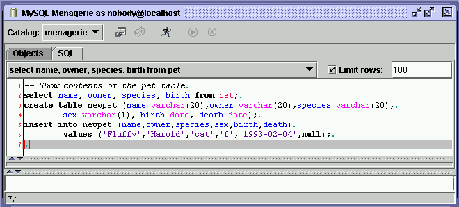
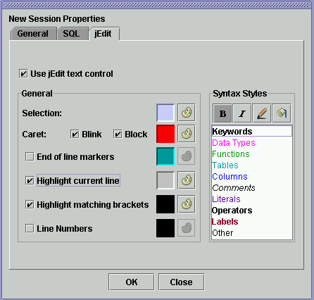

button will open a
colour palette that you can select a colour from.
button will open a
colour palette that you can select a colour from.
The jEdit plugin adds additional functionality such as syntax highlighting, bracket matching and more to the SQL entry area. It uses code from the jEdit text editor and from the Jalopy and BlueJ projects.
The New Session Settings dialog has a new "jEdit" tab which specifies the default settings for the SQL entry area for new sessions. The "jEdit" tab on the Session Settings dialog allows you to sonfigure the SQL entry area for the current session.

Use jEdit text control - If checked then the jEdit text area will be used instead of the standard Java text area. If this is unchecked then no other settings can be specified.
Selection - Allows you to specify a colour for selected text. The
button will open a
colour palette that you can select a colour from.
Caret - Allows you to specify whether the text caret should blink, if it should be a block or line shape and its colour.
End of line markers - Allows you to specify whether an end of line marker should be displayed for each line in the SQL entry area and the colour of the marker.
Highlight current line - If checked the current line in the SQL entry area will have the specified background colour.
Highlight matching brackets - If checked then when the text caret is before a bracket the matching bracket will be displayed in the specified colour.
Line numbers - If checked then line numbers in the specified colour will be displayed in the SQL entry area.
Syntax Styles - Allows you to specify the style associated with a
particular SQL token type. Select the token type in the list that you want to
specify the style for and use the toolbar buttons to set the style. The button will
cause the text to be displayed as bold, the  button will cause the text
to be displayed as italic, the
button will cause the text
to be displayed as italic, the  button will allow you to select the colour for the text, and the
button will allow you
to select the colour for the background.
button will allow you to select the colour for the text, and the
button will allow you
to select the colour for the background.